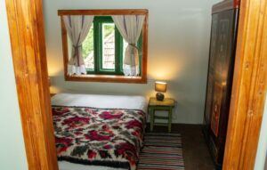

Cum am inceput sa alerg. Metoda simpla pentru a incepe si tu - Blog Pantofiori Veseli
- Este posibil să slăbești alergând De câte ori pe săptămână ar trebui .
- Tablou canvas - Eugene Burnand - Discipolii Petru si Ioan .
- alergând - Traducere în engleză - exemple în română .
- Alergând dimineața - funcționează cu aceste sfaturi; s Ahile .
- Cum să te faci alergat dimineața: Sfaturi utile. Câteva moduri .
prin parc în aceasta, PRIMĂVARA s-a împiedicat de ramuri și le-a umplut dd flori. Un gând bun de 8 Martie! - Sally Jones - Maimuța criminalului - Rezultate Google Books
- Iti place sa alergi dimineata? Ce beneficii iti aduce o sesiune .
- Alergând prin parc în dimineața. - Ovidiu Panisoara | Facebook
- Cum am inceput sa alerg. Metoda simpla pentru a incepe si tu .
- Beneficiile alergării - descoperă de ce să incluzi în rutina ta .

Blog Pantofiori Veseli
Stil si eleganta pentru copii
Skip to content Home Incaltaminte fete Incaltaminte baieti ReduceriCum am inceput sa alerg. Metoda simpla pentru a incepe si tu
by Carmen Nechita // Comments offAcum 3 ani am alergat prima oara. Spun prima oara pentru ca desi am mai alergat inainte, pana atunci nu am stiut ce inseamna sa alergi. Am mai alergat in liceu proba sprint pe 50 de metri si proba de rezistenta unde mi-am dat sufletul pentru 1 kilometru.
Cativa ani mai tarziu am mai incercat sa alerg (ca un facut tot intr-o perioada de toamna-iarna), si oricat ar suna de ciudat, de fapt nu stiam cum. Aveam in minte o imagine cu oameni alergand pe malul marii, alergand de-a lungul unui rau, alergand in parcuri. Toti alergau distante lungi de parca era cel mai simplu lucru din lume. Si de fapt, nu poate sa fie mult mai greu decat sa mergi. Daca uneori poti sa mergi o ora, poti sa alergi macar 20 de minute fara sa te opresti, sau?
Am incercat sa ajung in parc alergand, ceea ce era la vremea respectiva o distanta de 500 de metri. Am obosit la jumatate, am inceput sa merg, am ajuns in parc unde am mai alergat 100 de metri si m-am intors concluzionand ca in particular alergatul nu este un sport care mi se potriveste si in general nu este mare lucru de capul lui. Si oricum urasc sa ma trezesc dimineata, nu am fost niciodata prea sportiva si alergatul e un sport care se practica afara, deci esti vulnerabil la frig, ploaie, zapada si mai stiu eu ce alte intemperii, nu?
Acum trei ani cand am hotarat ca am sa incep sa alerg nu am comunicat acest lucru decat surorii mele, care bineinteles a ras si a zis ca pune pariu cu mine ca o sa renunt dupa o luna. Trei ani mai tarziu si inca consider ca putine lucruri sunt mai frumoase decat alergatul.
Ce a fost diferit de data aceasta?
Am avut un plan clar si simplu. Scopul era sa ajung sa alerg 5 kilometri in 9 saptamani (multi alearga 5 kilometri dupa o luna) pe care l-am respectat intocmai Am avut experienta altor abandonuri, deci seara cand ma culcam cea mai mare teama era ca de dimineata am sa ma razgandesc cand am sa aud ceasul. Si asa am descoperit cum te tine frica alert Am alergat dimineata. Cu cat amani ora de alergare cu atat cresc sansele sa nu mai alergi in ziua respectiva Am vrut sa alerg 5 kilometri. Suna simplu, dar acest scop clar m-a tinut focusata.Ce am castigat din alergare
Dupa o luna nu am mai avut probleme in a ma trezi dimineata. Asa ca si in weekend ma trezeam la 7 odihnita M-am lasat de fumat pentru ca vroiam sa alerg mai mult si mai bine Am cunoscut incredibil de multi oameni interesanti, la randul lor pasionati de acest sport Am inceput sa ma alerg in tot felul de competitii care au generat explozii de fericire cum rar le mai avem ca adulti (en-dor-fi-ne!) Am invatat sa gestionez altfel problemele de zi cu zi. Practic, de fiecare data cand aveam o problema, o dilema sau o suparare, indiferent de gravitatea ei, ma duceam sa alerg. De fapt, cu cat era mai grava cu atat dorinta de a alerga era mai mare. De fiecare data imi spuneam ca am sa ma gandesc la acel lucru in timp ce alerg. Lucru care nu se intampla niciodata, de fapt cand alergi nu te poti gandi la prea multe lucruri. Iar cand termini alergarea, deja problema a scazut la jumatate. Alergarea este o forma minunata de meditatie.Sunt multe lucruri care se schimba cand incepi sa alergi. Multe si mici, care nici nu pot fi descrise, dar care puse cap la cap te fac un om mai bun, mai echilibrat, mai fericit in viata de zi cu zi.
Nu e usor mereu.
Uneori ai face orice sa nu fi nevoit sa te dai jos din pat la 7 dimineata cand e innorat si frig afara. Dar dupa ce o faci o data inveti ca doar primele 5 minute afara sunt grele, apoi e cald si confortabil pentru simplu fapt ca alergi, si nimic nu se compara cu senzatia de mandrie personala cand te intorci acasa.
Uneri ai febra musculara, te dor genunchii, gleznele. Dar sunt dureri pe care le porti cu mandrie, aproape ca ranile de razboi.
Daca vrei sa incepi sa alergi si nu ai mai facut-o niciodata iti recomand programul pe care l-am facut eu. Este incet, lejer si va trezi iubirea fata de alergare. Eu zic ca dureaza 3 saptamani pana cand incepi sa te gandesti ca parca ai vrea sa alergi de mai mult de 3 ori pe saptamana.
SAPTAMANA 1 (3 sedinte)
Cinci minute warmup si cinci minute cool down la final. Alterneaza 60 secunde de jogging cu 90 secunde de mers ce vor insuma un total de 20 minute.
SAPTAMANA 2 (3 sedinte)
Cinci minute warmup si cinci minute cool down la final. Alterneaza 90 secunde de jogging cu 120 secunde de mers ce vor insuma un total de 20 minute.
SAPTAMANA 3 (3 sedinte)
Cinci minute warmup si cinci minute cool down la final. Repeta de doua ori: jog 90 secunde/mers 90 secunde/jog 3 minute/mers 3 minute.
SAPTAMANA 4 (3 sedinte)
Cinci minute warmup si cinci minute cool down la final. 3 minute/mers 90 sec/jog 5 minute/mers 2,5 min/jog 3 min/mers 90 sec/jog 5 min.
SAPTAMANA 5 (3 sedinte) ( saptamana cand incepi sa simti ca alergi )
Ziua 1: Cinci minute warmup si cinci minute cool down la final. Jog 5 min/mers 3 min/jog 5 min/mers 3 min/jog 5 min, la final cinci minute cool down.
Ziua 2: Cinci minute warmup si cinci minute cool down la final. Jog 8 min/mers 5 min/jog 8 min.
Ziua 3: Cinci minute warmup si cinci minute cool down la final. Jog 20 minute (in jur de 3 km) fara pauza.
SAPTAMANA 6 (3 sedinte)
Ziua 1: Cinci minute warmup si cinci minute cool down la final. Jog 5 min/mers 3 min/jog 8 min/mers 3 min/jog 5 min.
Ziua 2: Cinci minute warmup si cinci minute cool down la final. Jog 10 min/mers 3 min/jog 10 min.
Ziua 3: Cinci minute warmup si cinci minute cool down la final. Jog 25 minute (aproape 4 km) fara pauza.
SAPTAMANA 7 (3 sedinte)
Cinci minute warmup si cinci minute cool down la final. Jog 25 minute (aproape 4 km) fara pauza.
SAPTAMANA 8 (3 sedinte)
Cinci minute warmup si cinci minute cool down la final. Jog 28 minute (4,5 km si ceva) fara pauza.
SAPTAMANA 9 (3 sedinte)
Cinci minute warmup si cinci minute cool down la final. Jog 30 minute (in jur de 5 km) fara pauza.
Felicitari! Ai alergat 5 km!
This entry was posted in Sfaturi pentru mamici , Sfaturi pentru tatici and tagged familie , sfaturi pentru parinti .Post navigation
Navigation
← Obiceiuri bune care ne fac sa ne simtim mai bine in fiecare zi Adevarul urat despre frumuseteCauta
Ultimele articole
Sărbătorim 7 ani împreuna Noaptea Reducerilor castiga un voucher de 200 lei PantofioriVeseli.ro castiga premiul 2 la GPEC Aniversam 5 ani Top zece filme de CraciunCategorii
Antreprenoriat Atelierul Vesel Chic Mum concurs copilul culinar Despre noi In vacanta Intamplari la locul de joaca Mamici antreprenoare Noaptea Reducerilor Pantofiori Veseli Postari de weekend Reduceri Regulament Sfaturi pentru mamici Sfaturi pentru tatici UncategorizedArhiva
Arhiva Select Month September 2019 December 2017 November 2017 September 2017 December 2016 July 2016 June 2016 May 2016 April 2016 March 2016 February 2016 January 2016 December 2015 November 2015 October 2015 September 2015 August 2015 July 2015 June 2015 April 2015 March 2015 February 2015 January 2015 December 2014 November 2014 October 2014 September 2014 August 2014 July 2014 June 2014 May 2014 April 2014 March 2014 January 2014 December 2013 November 2013 October 2013 September 2013 August 2013 July 2013 June 2013 March 2013 February 2013 January 2013 December 2012 November 2012 October 2012 September 2012 August 2012 July 2012 June 2012 May 2012 April 2012 March 2012 Proudly powered by WordPress | Theme: Sugar & Spice by WebTuts . Social Media Integration by Acurax Wordpress Developers Powered By Ultimate Auction
Mauris vulputate dolor
Rutrum fermentum nibh in augue praesent urna congue rutrum.
Etiam posuere